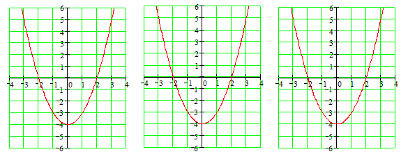
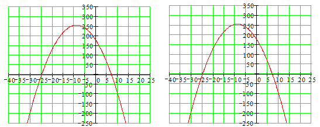
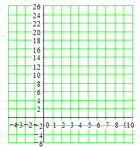
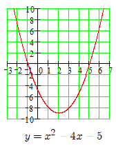
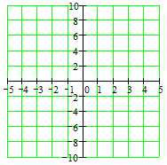
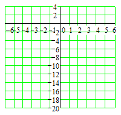

In this lesson we solve quadratic inequalities graphically and algebraically, and write their solutions with interval notation. Note that our algebraic technique uses properties of the parabola; we do not use a "sign graph" to solve inequalities.
Section 4.4 Quadratic Inequalities
Activity 4.4.1. Equal, Less Than, Greater Than.
Here are three copies of the graph of \(~y=x^2-4\text{.}\)

-
On the first graph, we’ll solve the equation \(~x^2-4=0\text{.}\) (Remember that \(~y=x^2-4\text{.}\))
- Find two points on the graph with \(y=0\text{.}\) Put dots there.
- What are the \(x\)-coordinates of those points?
- The solutions are:
-
On the second graph, we’ll solve the inequality \(~x^2-4 \lt 0\text{.}\)
- Mark all points on the graph that have \(y \lt 0\text{.}\)
- On the \(x\)-axis, mark the \(x\)-coordinates of all those points.
- Write an inequality to describe the portion of the \(x\)-axis marked.
-
On the third graph, we’ll solve the inequality \(~x^2-4 \gt 0\text{.}\)
- Mark all points on the graph that have \(y \gt 0\text{.}\)
- On the \(x\)-axis, mark the \(x\)-coordinates of all those points.
-
Write two inequalities to describe the portion of the \(x\)-axis marked.
Activity 4.4.2. Solving Quadratic Inequalities Graphically.
Here are two copies of the graph of
\begin{equation*}
~y=175-18x-x^2~
\end{equation*}

-
Use the first graph to solve \(~175-18x-x^2 = 0~\text{.}\)(Hint: Notice that one of the \(x\)-intercepts is \(25\text{.}\) Think of the factored form of the equation. What is the other factor?)\begin{equation*} (x+25)(x- \fillinmath{XXX})=0 \end{equation*}
-
Use the second graph to solve \(~175-18x-x^2 \lt 0~\text{.}\)
- Mark all points on the graph that have \(y \lt 0\text{.}\)
- On the \(x\)-axis, mark the \(x\)-coordinates of all those points.
- Write two inequalities to describe the portion of the \(x\)-axis marked.
-
Solve the inequality \(~20+4x-x^2 \le 8\text{.}\)
-
Rewrite the inequality so that the right side is zero.
- Graph the equation \(~y=12+4x-x^2\text{.}\)\(y\)-intercept:\(x\)-intercepts:(Solve \(~~12+4x-x^2=0)\)\begin{align*} \text{vertex:}~~~~~~x_v \amp = \dfrac{-b}{2a} = ~~~~~~~~~~~~~~~~\\ y_v \amp = ~~~~~~~~~~~~~~~~~ \end{align*}

- Use the graph to solve the inequality. Write the solution with interval notation.
-
Activity 4.4.3. Solving Inequalities Algebraically.
To solve a quadratic inequality,
\begin{equation*}
ax^2+bx+c \lt 0~~~~\text{or}~~~~ax^2+bx+c \gt 0
\end{equation*}
we must answer two questions:
- What are the \(x\)-intercepts of the related graph?
- Does the parabola open up or down?
Remember that you may need to use extraction of roots or the quadratic formula to find the \(x\)-intercepts of a parabola.
-
Use the graph to solve\begin{equation*} ~x^2-4x-5 \gt 0~ \end{equation*}Show the solution on the graph. Write your answer in interval notation.

-
Follow the steps to solve \(~4x^2+8x-5 \le 0\text{.}\)
- Find the \(x\)-intercepts of \(~y = 4x^2+8x-5\text{.}\)
-
Does the graph of \(~y = 4x^2+8x-5~\) open up or down? Make a rough sketch of the graph, and label the \(x\)-intercepts.
- Use the graph to solve the inequality. Write your answer in interval notation.

-
Solve the inequality \(~x^2 \ge 18\text{.}\)
- Write the inequality in standard form.
- Find the \(x\)-intercepts of the corresponding graph.
- Make a rough sketch of the graph. Use the graph to solve the inequality. Write your answer with interval notation.

-
Solve the inequality \(~10-8x+x^2 \gt 4\text{.}\)
- Write the inequality in standard form.
- Find the \(x\)-intercepts of the corresponding graph, (Use the quadratic formula.)
- Make a rough sketch of the graph. Use the graph to solve the inequality. Write your answer with interval notation.

Subsection 4.4.1 Check Your Understanding
- In Activity 1, we saw that for any value of \(x\text{,}\) the value of \(x^2-4\) is either , , or .
- Suppose you have a point \(P\) with \(y\)-coordinate 8 on the graph of an equation. How do you find the \(x\)-value that produces \(y=8\) in the equation?
- When you solve a quadratic inequality with a graph, how do you find the boundary points of the solution interval(s)?
- Use a graph to explain why the inequality \(~x^2+1 \lt 0~\) has no solution.
Subsection 4.4.2 Wrap-Up
In this Lesson, we worked on the following skills and goals related to quadratic models:
- Write compound inequalities
- Use interval notation
- Solve quadratic inequalities graphically
- Solve quadratic inequalities algebraically
Subsection 4.4.3 Questions for Writing or Discussion
- Explain how to use a graph to find the \(x\)-value that produces a particular \(y\)-value for a quadratic equation.
- Explain why you cannot write the solutions to \(x^2 - 4 \gt 0\) as a single inequality.
- Explain how to use a graph to solve \(x^2-4x+77 \le 0\text{.}\)
- Describe how to use interval notation.
Concept Questions.
-
What are the solutions of the inequality \(~x^2+1 \lt 0\text{?}\)
- \(\displaystyle (-1,1)\)
- \(\displaystyle (-\infty, -1) \cup (1, \infty)\)
- All real numbers
- No solutions
-
Which points on the parabola \(~y=ax^2+bx+c~\) do we need to know to solve the inequality \(~ax^2+bx+c \gt 0\text{?}\)
- The \(x\)-intercepts
- The \(y\)-intercept
- The vertex
- All of these
-
Why do we need to know whether tha parabola in question 2 opens up or down?
- To decide whether to use \(\gt\) or \(\lt\) in the solution.
- To decide whether the solutions lie between the \(x\)-intercepts or outside them.
- To decide whether the solutions are positive or negative.
- To help us find the \(x\)-intercepts.
-
What does the notation \([-3,3]\) mean?
- The point with \(x\)-coordinate \(-3\) and \(y\)-coordinate \(3\text{.}\)
- \(x=-3\) or \(x=3\)
- All real numbers between \(-3\) and \(3\text{,}\) excluding the endpoints.
- All real numbers between \(-3\) and \(3\text{,}\) including the endpoints.